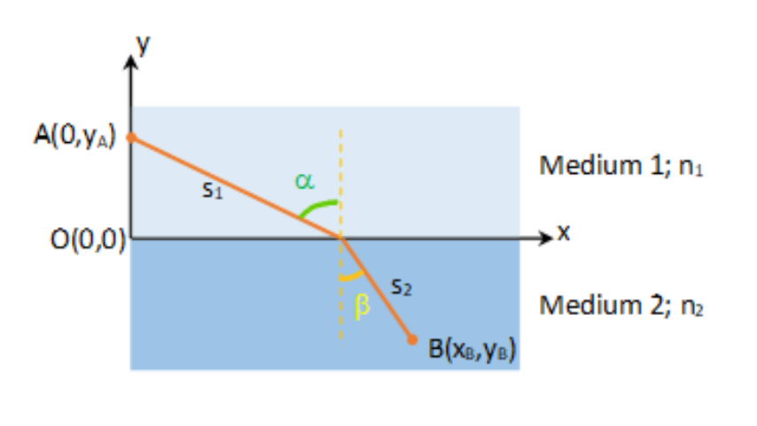
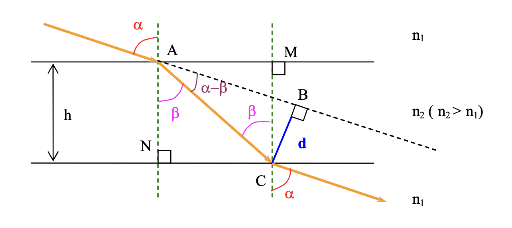
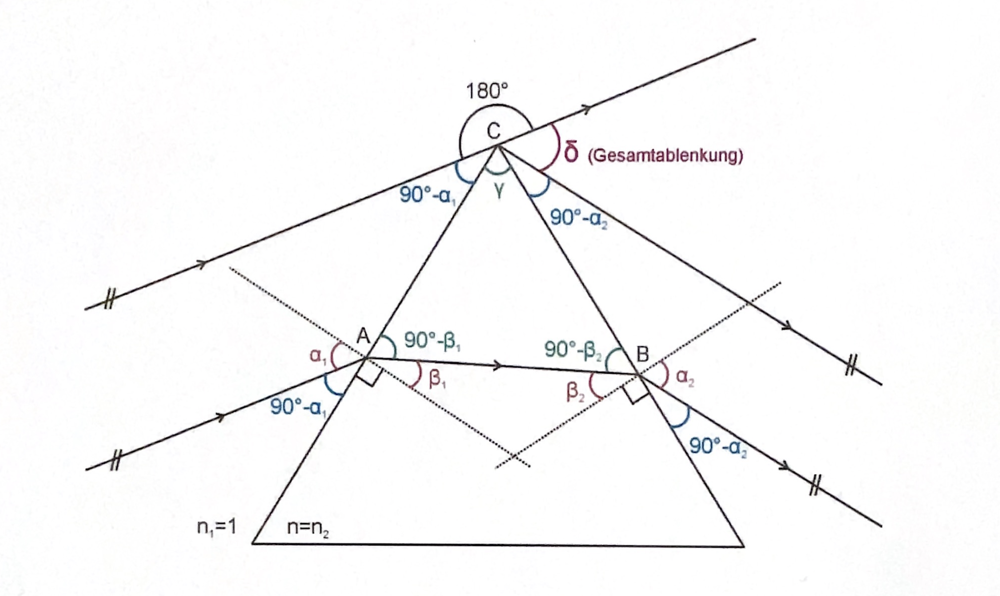
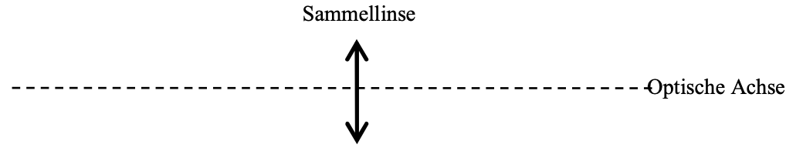
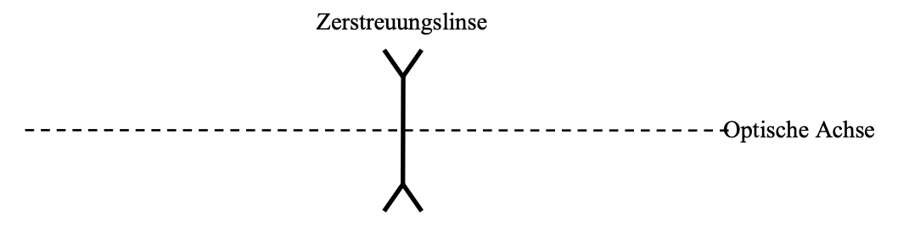
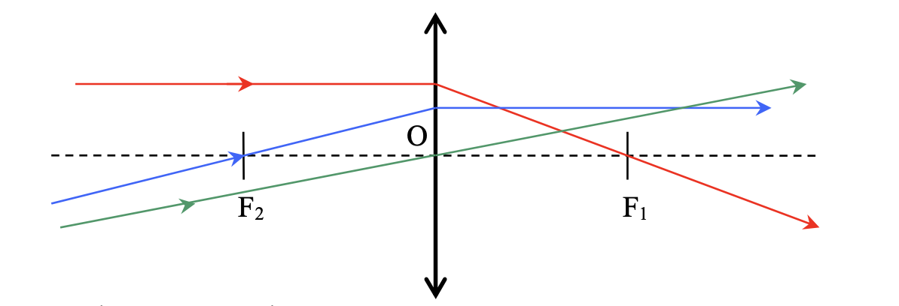
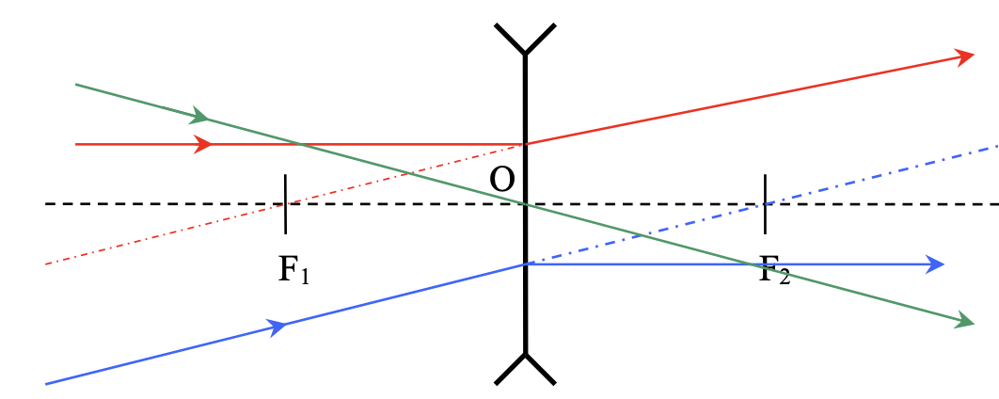
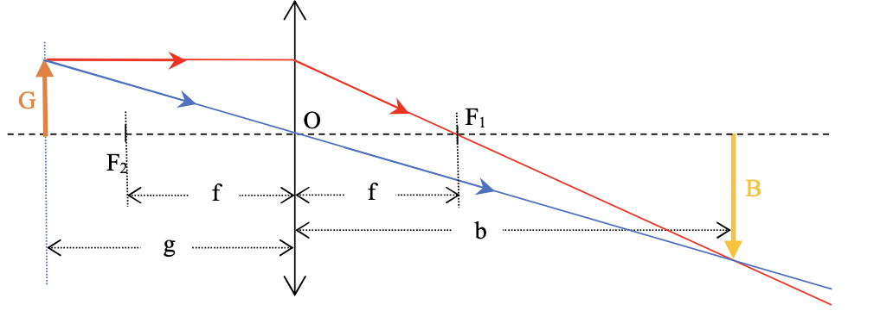
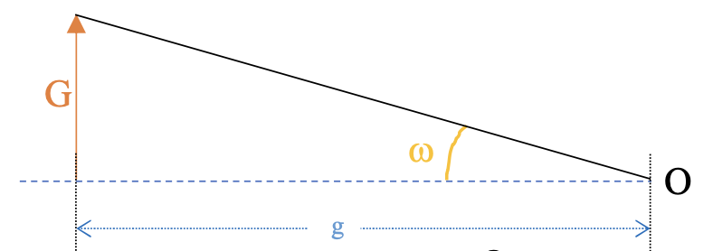
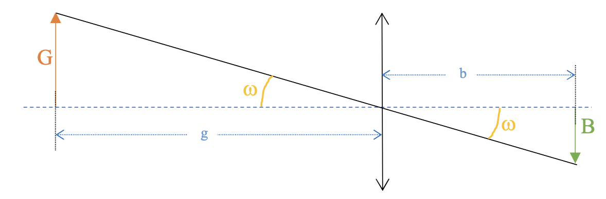

Strahlenoptik
Reflektion
Es gibt 2 Arten von Reflektionen:
Diffuse Reflektion
Gesetzmäßige Reflektion
Reflektions Gesetz bei gemäßigter Reflektion
Der einfallende Strahl, das Lot und der reflektierte Strahl liegen in
einer Ebene.
Der Einfallswinkel \( \alpha \) ist gleich dem Reflektionswinkel \(
\alpha^{\prime} \)
Das Lot
Das Lot (oder Einfallslot) ist eine Hilfslinie, welche senkrecht zum Spiegel steht, in dem Punkt wo der einfallende Lichtstrahl auf den Spiegel trifft.
Reelles, Virtuelles Bild
Reelles Bild
Wenn das Bild mittels eines Schirmes aufgefangen werden kann, dann ist das Bild reell.
Virtuelles Bild
Wenn das Bild nicht mittels eines Schirmes aufgefangen werden kann, dann ist das Bild virtuell.
Brechungsindex
Die Lichtgeschwindigkeit ist in materiellen Medien kleiner als im Vakuum.
Die Lichtgeschwindigkeit ist eine der wenigen exakten Naturkonstanten.
$$\approx 3\cdot 10^{8}\frac{m}{s} $$Der Brechungsindex n oder Brechzahl eines Mediums ist definiert als der Quotient aus der Lichtgeschwindigkeit \( c_0 \) im Vakuum und der Lichtgeschwindigkeit \( c \) im Medium.
Definition
$$ n=\frac{Geschwindigkeit\ des\ Lichtes\ im\ Vakuum}{Geschwindigkeit\ des\ Lichtes\ im\ Medium} $$$$ n=\frac{c_0}{c} $$
Zusammenhang zwischen den Brechzahlen und den Lichtgeschwindigkeiten
$$ \frac{n_{2}}{n_{1}} =\frac{\frac{c_{0}}{c_{2}} }{{}\frac{c_{0}}{c_{1}} } =\frac{c_{1}}{c_{2}} $$Brechungsgesetz
$$ \frac{\sin \left( \alpha \right) }{\sin \left( \beta \right) } =konstant=\frac{n_{1}}{{}n_{2}} $$ $$ n_{1}\cdot \sin \left( \alpha \right) \ =\ n_{2}\cdot \sin \left( \beta \right) $$ $$ \alpha ,\ Winkel\ im\ Medium\ 1\ \left( Einfallswinkel\right) $$ $$\beta ,\ Winkel\ im\ Medium\ 2\ \left( Brechungswinkel\right) $$Prinzip von Fermat
Das Licht nimmt den Weg der am wenigsten Zeit beansprucht.
Brechungsgesetzes von Snellius
Herleitung
Um von A nach B zu gelangen folgt der Strahl dem Prinzip von Fermat, er nimmt den Weg den die geringste Zeit beansprucht.
$$ t_{gesamt} = t_1 + t_2 = \frac{s_1}{c_1} + \frac{s_2}{s_2}$$
Um die minimale Zeit zu bestimmen berechnen wir die Ableitung und
stellen diese gleich null.
Laut Pythagoras gilt im Rechtwinkeligen Dreieck:
Berechnung der Ableitungen
$$ A=\sqrt{x^{2}+y^{2}_{A}} \ \rightarrow \ A^{\prime }=\frac{x}{\sqrt{x^{2}+y^{2}_{A}} } $$ $$ B=\sqrt{\left( x-x_{B}\right)^{2} +y^{2}_{B}} \ \rightarrow \ B^{\prime }=\frac{-\left( x-x_{B}\right) }{\sqrt{\left( x-x_{B}\right)^{2} +y^{2}_{B}}} $$ $$ C=c_{1}\ \rightarrow \ C^{\prime }=0 $$ $$ D=c_{1}\ \rightarrow \ D^{\prime }=0 $$ $$ t^{\prime }_{gesamt}=\frac{x}{\sqrt{x^{2}+y^{2}_{A}} \cdot c_{1}} +\frac{-x+x_{B}}{\sqrt{\left( x-x_{B}\right)^{2} +y^{2}_{B}} \cdot c_{2}} $$ $$ =\frac{\sin \left( \alpha \right) }{c_{1}} -\frac{\sin \left( \beta \right) }{c_{2}} $$Ein minimum liegt vor wenn die Ableitung gleich 0 ist.
$$ t^{\prime }_{gesamt}=\frac{\sin \left( \alpha \right) }{c_{1}} -\frac{\sin \left( \beta \right) }{c_{2}} =0$$ $$ \frac{\sin \left( \alpha \right) }{c_{1}} =\frac{\sin \left( \beta \right) }{c_{2}} $$ $$ \Longrightarrow \frac{\sin \left( \alpha \right) }{\sin \left( \beta \right) } =\frac{c_{1}}{c_{2}} =\frac{{}n_{2}}{n_{1}} $$Daraus folgt das Brechungsgesetz von Snellius
$$\Longrightarrow n_{1}\cdot \sin \left( \alpha \right) =n_{2}\cdot \sin \left( \beta \right) $$Totalreflektion
Bestimmung des Grenzwinkels
Mit dem Brechungsgesetz: \( \ n_{1}\cdot \sin \left( \alpha \right)
=n_{2}\cdot \sin \left( \beta \right) \ \)
und \( \alpha =\alpha_{G} \ \left( in\ Medium\ 1 \right) \)
und \(\beta =90^{\circ }\ \left( in\ Medium\ 2\right) \)
Wir erhalten also aus dem Brechungsgesetz
Bemerkung
Da die Sinusfunktion auf -1 bis 1 definiert ist, gibt es keinen Winkel den der Lichtstrahl einnehmen könnte; deshalb erhalten wir das Phänomen : Totalreflektion.
Planparallele Platte
Fällt ein Lichtstrahl senkrecht auf eine planparallele Platte, so geht der Stahl ungebrochen hindurch. Fällt er schräg auf, so erfährt er beim Durchgang eine Parallelverschiebung.
Herleitung
Wir wollen einen Ausdruck für die Parallelverschiebung \( d \) mit \( h
\) und \( \alpha \) und den Brechzahlen \( n_1 \) und \( n_2 \).
Im Dreieck \( ANC \) gilt:
Im Dreieck \( ABC \) gilt:
$$\sin \left( \alpha -\beta \right) =\frac{d}{AC} $$ $$ \Leftrightarrow AC=\frac{d}{\sin \left( \alpha -\beta \right) } $$
Suche nach einem Ausdruck für \( \beta \)
Brechungsgesetz:
Prisma

Im Dreieck \( ABC \):
Die Summe der Internen Winkeln beträgt \( 180^{\circ } \):
Im Punkt \( C \):
Der platte Winkel beträgt \( 180^{\circ } \):
Prismenwinkel, brechender Winkel
Definition
Der brechende Winkel \( \gamma \) ist der Winkel zwischen der Eintrittsfläche und der Austrittsfläche des Lichtstrahls.
Ablenkungswinkel, Gesamtablenkung
Definition
Der Ablenkungswinkel \( \delta \) ist der Winkel zwischen dem einfallenden und dem austretenden Lichtstrahl.
Minimalablenkung in einem Prisma
Formel der Ablenkung
$$ \delta =\alpha_{1} +\alpha_{2} -\gamma $$Herleitung
Um die Minimalablenkung \( \delta_{min} \) zu bestimmen muss dei Ableitung einer Funktion in der \( \delta \) vorhanden ist aufgestellt werden, und die gleich Null stellen:
Berechnung des Brechungsgesetzes an der Eintrittsfläche
$$ n_{1}\cdot \sin \left( \alpha_{1} \right) =n_{2}\cdot \sin \left( \beta_{1} \right) $$ $$\Rightarrow \alpha_{1} =\sin^{-1} \left[ \frac{n_{2}}{n_{1}} \cdot \sin \left( \beta_{1} \right) \right] $$Berechnung des Brechungsgesetzes an der Austrittsfläche
$$ n_{1}\cdot \sin \left( \alpha_{1} \right) =n_{2}\cdot \sin \left( \beta_{1} \right) $$ $$ \Rightarrow \alpha_{2} =\sin^{-1} \left[ \frac{n_{2}}{n_{1}} \cdot \sin \left( \beta_{2} \right) \right] $$ $$ mit\ \gamma =\beta_{1} +\beta_{2} $$ $$ \Rightarrow \alpha_{2} =\sin^{-1} \left[ \frac{n_{2}}{n_{1}} \cdot \sin \left( \gamma -\beta_{1} \right) \right] $$Für die Ablenkung \( \delta \) gilt also:
$$ \delta =\sin^{-1} \left[ \frac{n_{2}}{{}n_{1}} \cdot \sin \left( \beta_{1} \right) \right] +\sin^{-1} \left[ \frac{n_{2}}{n_{1}} \cdot \sin \left( \gamma -\beta_{1} \right) \right] -\gamma $$Für Minimalablenkung gilt:
$$ \frac{d\delta }{d\beta_{1} } =0$$ $$\Leftrightarrow \frac{\frac{n_{2}}{n_{1}} \cdot \cos \left( \beta_{1} \right) }{\sqrt{1-\left( \frac{n_{2}}{n_{1}} \right)^{2} \cdot \sin^{2} \left( \beta_{1} \right) } } +\frac{\frac{n_{2}}{n_{1}} \cdot \cos \left( \gamma -\beta_{1} \right) \cdot \left( -1\right) }{\sqrt{1-\left( \frac{n_{2}}{n_{1}} \right)^{2} \cdot \sin^{2} \left( \gamma -\beta_{1} \right) } } =0$$ $$ \Leftrightarrow \frac{\cos \left( \beta_{1} \right) }{\sqrt{1-\left( \frac{n_{2}}{n_{1}} \right)^{2} \cdot \sin^{2} \left( \beta_{1} \right) } } =\frac{\cos \left( \gamma -\beta_{1} \right) }{\sqrt{1-\left( \frac{n_{2}}{n_{1}} \right)^{2} \cdot \sin^{2} \left( \gamma -\beta_{1} \right) } } $$Dies gilt nur wenn:
$$ \cos \left( \beta_{1} \right) =\cos \left( \gamma -\beta_{1} \right) $$ $$und$$ $$\sin^{2} \left( \beta_{1} \right) =\sin^{2} \left( \gamma -\beta_{1} \right)$$Die Gleichungen sind nur wahr wenn:
$$\beta_{1} =\gamma -\beta_{1} $$\( \delta \) ist minimal wenn:
$$ \beta_{1} =\frac{\gamma }{2} $$Des weiteren gilt:
$$ \gamma =\beta_{1} +\beta_{2} $$ $$ \Rightarrow \beta_{2} =\frac{\gamma }{2} $$Das heißt der Strahlengang verläuft symmetrisch durch das Prisma.
Fraunhoferformel
Herleitung
$$\delta_{min} =2\cdot \alpha_{1} -\gamma $$ $$ \Leftrightarrow \alpha_{1} =\frac{\delta_{min} +\gamma }{2} $$ $$und$$ $$ \gamma =\beta_{1} +\beta_{2}$$Bei Minimalablenkung gilt:
$$ \Rightarrow \beta_{1} =\beta_{2} =\frac{\gamma }{2} $$Setzt man diese Gleichungen in das Brechungsgesetz ein, so ergibt dies:
$$\sin (\alpha_{1} )=\sin \left( \frac{\gamma }{2} \right) $$ $$ \Leftrightarrow \sin \left( \frac{\delta_{min} +\gamma }{2} \right) =n\cdot \sin \left( \frac{\gamma }{2} \right) $$ $$ \Leftrightarrow n=\frac{\sin \left( \frac{\delta_{min} +\gamma }{2} \right) }{\sin \left( \frac{\gamma }{2} \right) } $$Linsen
Eine Linse ist ein rotationssymmetrischer Körper der meist aus Glas oder Kunststoff hergestellt ist. Das optische Medium ist von zwei Kugelflächen begrenzt. Es ergeben sich zwei verschiedene Linsenarten.
Sammellinse, Konvexlinse
Es gibt:
-
Bikonvexlinsen
-
Plankonvexlinsen
-
Konkavkonvexlinsen
Skizzierung
Zerstreuungslinse, Konkavlinsen
Die Zerstreuungslinse, Konkavlinse ist in der Mitte dünner als am Rand.
Es gibt:
-
Bikonkavlinsen
-
Plankonkavlinsen
-
Konvexkonkavlinsen
Skizzierung
Hauptstrahlen bei Linsen
Brennpunkt
Ein Lichtbündel, welches parallel zur optischen Achse verläuft, wird
nach dem Durchgang durch eine Sammellinse in einem Punkt gebündelt.
Dieser Punkt wird Brennpunkt genannt.
Symmetrisch zum Mittelpunkt der Linse befindet sich der zweite
Brennpunkt.
Brennweite
Die Distanz zwischen dem Mittelpunkt der Linse und dem Brennpunkt ist die Brennweite und wird mit dem Buchstaben \( f \) angeschrieben.
Sammellinse

Brennpunkte:
\( F_1 \) und \( F_2 \)
Brennweite:
\( OF_1\ =\ OF_2 =\ f \)
-
Ein Lichtstrahl, der parallel zur optischen Achse verläuft, verläuft nach der Brechung durch den Brennpunkt \( F_1 \). Ein Achsenparallelstrahl wird zum Brennpunktstrahl gebrochen.
-
Ein Lichtstrahl, der durch den Brennpunkt \( F_2 \) verläuft, verläuft nach der Brechung parallel zur optischen Achse weiter. Ein Brennpunktstrahl wird zum Achsenparallelstrahl gebrochen.
-
Ein Lichtstrahl, der durch den Mittelpunkt \( O \) verläuft, verläuft in gerader Linie weiter. Ein Mittelpunktstrahl wird nicht gebrochen.
Zerstreuungslinse

Brennpunkte:
\( F_1 \) und \( F_2 \)
Brennweite:
\( OF_1\ =\ OF_2 =\ f \)
-
Ein Lichtstrahl, der parallel zur optischen Achse verläuft, scheint nach der Brechung aus dem Brennpunkt \( F_1 \) zu kommen. Ein Achsenparallelstrahl wird zum Brennpunktstrahl gebrochen.
-
Ein Lichtstrahl, der durch den Brennpunkt \( F_2 \) verlaufen müsste, verläuft nach der Brechung parallel zur optischen Achse weiter. Ein Brennpunktstrahl wird zum Achsenparallelstrahl gebrochen.
-
Ein Lichtstrahl, der durch den Mittelpunkt \( O \) verläuft, verläuft in gerader Linie weiter. Ein Mittelpunktstrahl wird nicht gebrochen.
Bildentstehung an Linsen
-
reelle Bilder
Die Strahlen konvergieren hinter der Linse, somit können diese Bilder auf einem Schirm aufgefangen werden.
-
virtuelle Bilder
Die Strahlen divergieren hinter der Linse, somit können diese Bilder durch unser Auge erkannt werden, jedoch nicht auf einem Schirm sichtbar gemacht werden.
Ob reelle oder virtuelle Bilder entstehen, hängt von der Position des Gegenstandes zur Linse ab.
Es gilt:
$$F_1\ und F_2\, \ Brennpunkte$$ $$G,\ Gegenstandsgröße $$ $$B, \ Bildgröße $$ $$g, \ Gegenstandsweite$$ $$b, \ Bildweite $$ $$f,\ Brennweite$$Bildkonstruktion Sammellinsen
Es gelten folgende Vorzeichenregeln:
-
Brennweite
Sammellinse: \( f > 0 \)
Zerstreuungslinse: \( f < 0 \) -
Gegenstand
reeller Gegenstand: \( g>0 \) und \( G>0 \)
virtueller Gegenstand: \( g < 0 \) und \( G < 0 \) -
Bild
reeller Bild: \( b > 0 \) und \( B > 0 \)
virtueller Bild: \( b < 0 \) und \( B < 0 \)
| Gegenstandsweite \( g \) | Bildweite \( b \) | Bildeigenschaften |
|---|---|---|
| \( + \infty \) | \( f \) | verkleinert, umgekehrt, reell |
| \( + \infty > g > 2f \) | \( f < b < 2f \) | verkleinert, umgekehrt, reell |
| \( 2f\) | \( 2f\) | gleich groß, umgekehrt, reell |
| \( 2f > g > f\) | \( 2f > b > \infty \) | vergrößert, umgekehrt, reell |
| \( f\) | \( + \infty \) | sehr groß, umgekehrt, reell |
| \( f > g > 0 \) | \( -\infty < b < 0 \) | vergrößert, aufrecht, virtuell |
| \( g \rightarrow 0 \) | \( b \rightarrow 0 \) | gleich groß, aufrecht, virtuell |
Bildkonstruktion Zerstreuungslinsen
-
Bild
verkleinert; aufrecht, gerade; virtuell
| Gegenstandweite | Bildweite |
|---|---|
| \( +\infty > g > 0 \) | \( -f < b < 0 \) |
Sehwinkel
Der Sehwinkel ist der Winkel unter dem ein Beobachter einen Gegenstand sieht. Er wird mit \( \omega \) bezeichnet.
Wir erhalten:
$$ \frac{G}{g} = \tan(\omega)$$Bei kleinen Winkeln erhalten wir durch Kleinwinkelnäherung (wenn \( \omega \) in \( rad \) ):
$$ \omega = \frac{B}{b} = \frac{G}{g} $$Einheit
Der Sehwinkel kann in \( rad \) oder in Sekunden \( s \) und Minuten \( min \) angegeben werden.
$$ 1^{\circ} = 60^{\prime}\ (min)$$ $$ 1^{\circ} = 3600^{\prime \prime}\ (s)$$Abbildungsmaßstab
Herleitung
Da ähnliche Dreiecke:
$$ \tan(\omega) = \frac{G}{g} = \frac{B}{b} $$ $$ \Leftrightarrow \frac{B}{G} =\frac{b}{g} $$Abbildungsmaßstab
$$ \Gamma = \left| \frac{B}{G} \right| $$Der Abbildungsmaßstab gibt uns an, wie viel Mal das Bild größer als der Gegenstand ist und ist immer positiv.
Dioptrie
Oft wird nicht die Brennweite einer Linse angegeben, sondern ihre Brechkraft \( D \) in Dioptrien.